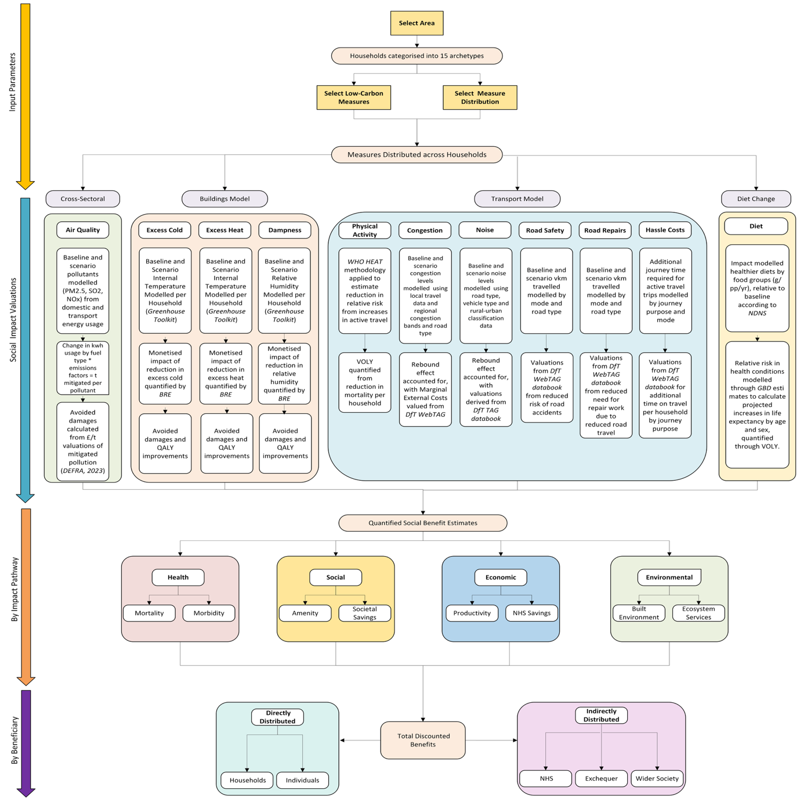
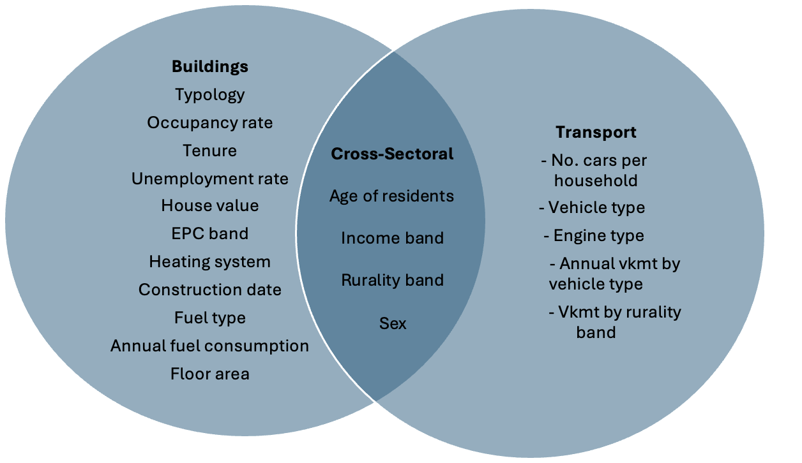

The CCC has outlined necessary low-carbon actions for the UK to reach net zero in its 7th Carbon Budget1. These national-level measures have been redistributed across localities based on each area’s specific characteristics like rurality, age, building types and travel patterns. The subsequent impact of these interventions have been modelled according to the place-based methodology of each of the 11 co-benefit types:
Air quality improvements
Noise reduction
Excess cold reduction
Excess heat reduction
Dampness reduction
Congestion impacts
Longer travel times
Road maintenance impacts
Road safety impacts
Physical activity increase
Dietary improvements
Each of the above cobenefit types are modelled against a baseline trajectory for each local area, with the difference between the net-zero and baseline scenarios resulting in the projected co-benefit gains. The co-benefits are modelled and distributed to beneficiaries directly and indirectly, for example to individuals via improved quality of life, or to national bodies like the NHS or the Exchequer in the form of reduced spending requirements.
Similar social impact modelling has previously been developed and utilised1 by local authorities and actors in compliance with UK Green Book methodologies. This analysis has built on previous projects developed for the CCC and in conjunction with PwC2 to quantify impacts on health and society from net-zero interventions.
It uses reported data at the highest available resolution (data zones or LSOAs) across the UK to aggregate populations into archetypes based on social and economic characteristics. The interventions are modelled and distributed through these archetype groupings, while accounting for local variation by geographic area (congestion bands, population density, EPC ratings, etc.).
The analysed co-benefits are not exhaustive, and projected estimates are therefore conservative. Due to scoping constraints and data limitations, the 11 co-benefit types were selected as being the most methodologically robust. They cover all central technologies in the CCC’s pathway to reach net-zero3 in the buildings and transport sector, as well as the impact on human health from shifts to low-carbon, plant-based diets. These interventions include:
Buildings Sector:
Hybrid heat pump
Air source heat pump
Ground source heat pump
Floor insulation
Roof insulation
Solid wall insulation
Cavity wall insulation
Other insulation types
More efficient appliances
Transport:
Reduction in transport demand
Shifts to low-carbon transport (public transport, electric vehicles, hybrid vehicles, active travel).
Dietary Change:
Shifts to healthier diets (reductions in meat and dairy, replaced with plant-based foods)
The CCC has outlined necessary low-carbon actions for the UK to reach net zero in its 7th Carbon Budget3. These national-level measures have been redistributed across localities based on each area’s specific characteristics like rurality, age, building types and travel patterns. The subsequent impact of these interventions have been modelled according to the methodology of each specific cobenefit type below.

Figure 1 – High-level social impact methodology for each small area
Figure 2 – Cobenefit types and respective damage pathways using total UK outputs from CB7 analysis

Figure 3 – LSOA/Datazone-level data for archetypal analysis
The air quality co-benefit measures the reduction in air pollution, primarily as a result of decreased fossil fuel combustion, and quantifies the benefit to individuals and society.
Air quality improvements are quantified by modelling the delta of energy consumption between the low-carbon intervention (e.g. heat pumps) and the counterfactual (e.g. gas boilers), before estimating the tonnes of pollutants mitigated by type. The reduction in pollutants (PM2.5, PM10, SO2, NOx) from fossil fuel combustion are valued according to UK Green Book valuations (developed by Ricardo4).
These avoided damages are allocated according to beneficiary type (health/non-health, productivity, etc.), and distributed to households indirectly according to population density bands. The sum of air quality co-benefits from the buildings and transport sectors represent the total air quality co-benefit estimations.
These benefits are discounted according to HM Treasury’s Green Book appraisal guidance for social (1.5% p.a.) and central discount rates (3.5%)5.
Buildings – We first calculate the baseline emissions of damaging pollutants by multiplying the deployment of the counterfactual by fuel type (e.g. gas boilers, combi boilers, oil boilers (according to EPC data of the local area)) by energy usage per unit. We multiply the energy usage in kwh/mwh by factors developed by Ricardo1 according to fuel type to calculate tonnes of emitted pollutant. These estimates are multiplied by damage costs1 to calculate the total valuation of mitigated air pollution.
These avoided damages cover economic, social and environmental degradation, and are distributed to inhabitants specific to the area in question (improvements in life expectancy, improved health outcomes, etc.), or nationally where appropriate (NHS savings, productivity gains, etc.). Due to constraints in the literature, changes to indoor air quality were not modelled in this analysis.
The avoided damages (i.e. benefits) are measured annually, accounting for forecasted changes in population growth, fuel usages, and emissions intensities. All costs are discounted through to 2050.
\[ \begin{aligned} & \sum_{}^{} \text{Fuel Use} \left( \text{Change in Energy Consumption (GWh)} \times \text{Particulate Emissions Factors} \right) \\ & \times \text{Air Quality Damage Cost by Pollutant Type} \\ & \times \text{Share of Damages Attributable to Impact Pathway} \\ & \times \text{Share of Impacts to Beneficiary} \\ & = \text{Total Value of Avoided Damages (£)} \end{aligned} \]
Transport – We model the baseline scenario for vehicles driven in a given area, based on per capita assumptions from national and regional travel patterns, estimating travel by vehicle type, road type, and fuel type67. This is multiplied by average fuel consumption by vehicle type and per kilometre travelled, which is then multiplied by air pollutant emissions factors to estimate total emitted pollutants (PM2.5, SO2, NOx) from travel in an area from tailpipe emissions. Non-exhaust emissions (PM2.5) from wear on tyres, brakes and roads are estimated from distance travelled, using emissions factors from the Air Quality Expert Group8. Damage factors are applied on a per-tonne of pollutant basis, according to pollutant type and rurality bands.
The same process is repeated for the low-carbon interventions; changing the vehicle type and fuel type, modifying distance travelled per capita where applicable, and summing total tailpipe and non-tailpipe pollutants.
The total value of avoided air pollution is the delta of the two scenarios, calculated annually through to 2050 and discounted accordingly.
\[ \begin{aligned} & \left( \left( \text{Electricity Consumption by EVs} \times \text{Particulate Emissions Factors} \right) + {} \right. \\ & \left. \quad \left( \text{Fuel Consumption by ICE vehicles} \times \text{Particulate Emissions Factors} \right) \right) \times \text{Unit Conversions} \\ & + \left( \text{Particulate Emissions from (Brake Wear, Tyre Wear, Road Wear)} \right) \\ & \times \text{Change in distance by mode (vkm)} \\ & \times \text{Share of vkm travelled by rural-urban classification} \\ & \times \text{Air Quality Damage Costs} \\ & \times \text{Share of Damages Attributable to Impact Pathway} \\ & \times \text{Share of Impacts to Beneficiary} \\ & = \text{Total Value of Avoided Damages (£)} \end{aligned} \]
Excess cold co-benefit represents the avoided costs of poor health and NHS costs resulting from individuals living in homes with low internal temperatures.
A building physics model is used to estimate internal temperature before and after installation of the low-carbon intervention, based on the household’s physical properties and characteristics. Buildings with temperatures below the excess cold threshold (19ο Celsius) are then mapped to damage costs developed by BRE910 to estimate improvements in health, quality of life, and NHS savings, with seasonal variations in temperature accounted for.
Damages are more heavily-weighted at the lower end of the temperature spectrum, using a sigmoid function from 10ο – 19ο Celsius. This allows us to properly quantify the reduction in excess cold damages if a property’s temperature increases from 12ο - 18ο Celsius; i.e. the most severe health outcomes originate from the lowest-temperature households. All households over 19ο Celsius are by definition not at risk of excess cold.
Quality of life and health improvements are distributed directly to the household implementing the low-carbon measure, with economy and NHS savings attributed indirectly to society.
\[ \begin{aligned} & \text{Change in minimum winter temperature by archetype and EPC band } (\Delta^\circ\mathrm{C}) \\ & \times \left( \text{Change in QALYs per person per increase in temperature} \right. \\ & \quad \times \text{Population forecast by archetype} \\ & \quad \times \text{Value of Life Year} \\ & \left. \quad + \text{NHS and societal savings per change in property temperature} \right) \\ & \times \text{Number of households per archetype by EPC band} \\ & \times \text{Share of households with Category 1 excess cold health hazards} \\ & \times \text{Share of vulnerable populations per archetype} \\ & = \text{Total value of excess cold reduction to individuals and society (£)} \end{aligned} \]
The reduction in dampness is a co-benefit resulting from decreased excess humidity in buildings, which leads to lower incidence of mould, building damage, and microbial growth; all of which can result in health deficiencies.
The co-benefit is quantified in a similar manner to excess cold, using the building physics model to map relative humidity to internal temperature11, comparing the baseline humidity to the humidity levels after the intervention, and measuring the corresponding reduction in health risk12.
The co-benefits are distributed directly to the proponent of the low-carbon action as health benefits, with indirect impacts appropriated across relevant households and to the NHS.
\[ \begin{aligned} & \text{Change in minimum winter temperature by archetype and EPC band } (\Delta^\circ\mathrm{C}) \\ & \times \text{ Unit Conversion } (\Delta RH / \Delta^\circ\mathrm{C}) \\ & \times \left( \text{Change in QALYs per person per increase in temperature} \right. \\ & \quad \times \text{ Population forecast by archetype} \\ & \quad \times \text{ Value of Life Year} \\ & \left. \quad + \text{ NHS and societal savings per change in property relative humidity} \right) \\ & \times \text{ Number of households per archetype by EPC band} \\ & \times \text{ Share of households with Category 1 dampness hazards} \\ & \times \text{ Share of vulnerable populations per archetype} \\ & = \text{Total value of dampness reduction to individuals and society (£)} \end{aligned} \]
The reduction of noise co-benefit is a result of decreased levels of noise pollution, which lead to the negative effects on the health and well-being of society and ecosystems.
Environmental noise pollution is the second-greatest environmental risk in Europe13, leading to declines in quality of life, reduced amenity, sleep disturbances, and increased health risks.
The co-benefit is quantified by estimating baseline noise in the local area, through mapping noise levels by road type and rural-urban classification, using estimates from the Department for Transport14.
The change in noise pollution is modelled by using the relationship between vehicle type and noise11, to estimate the marginal changes in decibels per vehicular kilometre travelled (either by reduction in vkmt or shifting vkmt to EVs). The benefits are valued using the DfT’s TAG noise assessment databook15, and distributed to populations based on the rural-urban classification in which the reduction in noise occurs, so that avoided damages can be weighted appropriately. This is broken down into distinct damage pathways, like increased amenity and reduced sleep disturbance.
\[ \begin{aligned} & \text{Baseline distance travelled by vehicle type and powertrain (vkm)} \\ & \times \text{ Share of vkm by road type and rural-urban classification} \\ & \times \text{ Typical noise pollution by vehicle and road type} \left( \frac{\mathrm{dB}}{\mathrm{vkm}} \right) \\ & \times \left( \text{Baseline modelled noise (dB)} - \text{Net change in modelled noise pollution} \right) \\ & \times \text{ Share of population affected} \\ & \times \text{ Avoided marginal external costs of noise pollution (£)} \\ & \times \text{ Share of impact pathway} \\ & = \text{Total value of avoided noise pollution relative to baseline (£)} \end{aligned} \]
Increased physical activity co-benefit represents the health benefits gained through increased levels of exercise, resulting from a shift to active travel journeys from car trips.
Physical inactivity is associated with 1in 6 deaths in the UK and costs £7.4 billion each year21. Physical activity levels vary by population subsets, with men, higher earners and younger age groups more likely to be physical active.22
Shifts away from carbon-intensive journeys form an important part of the UK’s journey to net-zero, with varying shifts to active travel journeys projected across the UK. The increased levels of exercise, relative to baseline activity levels, will result in health improvements from the reduced risk of all-cause mortality, including cardiovascular disease and type 2 diabetes.
Shifts from the CCC’s Seventh Carbon Budget are reallocated across the UK according to rurality bands and current travel patterns, with the greater shifts occurring in urban areas in line with CCC guidance and current travel patterns disaggregated by rurality and road types by the National Travel Survey (NTS)23. Total UK-level shifts by mode were reallocated on a per-capita basis based on these assumptions.
The World Health Organisation’s (WHO) Health and Economic Assessment Tool (HEAT)24 methodology is utilised to estimate the reduced risk of all-cause mortality resulting from the increased levels of physical activity. In conjunction with place-specific data on age and sex, it is also used to predict increases in life expectancy, qualified through the UK Green Book’s Value of a Life Year (VOLY), and discounted according to health discount rates in the guidance (1.5%). Benefits are allocated directly to the individuals undertaking the behavioural change. We do not currently include estimates on the benefits on mental health or the NHS.
\[ \begin{aligned} & \text{Total additional distance travelled by active modes} \\ & \quad \text{by archetype, rurality, and region (km/year)} \\ & \div \text{ Average walking and cycling speeds by rurality (km/hour)} \\ & \div \text{ Population affected by behavioural change} \\ & \times \text{ Cap on minutes of physical activity} \\ & \quad \text{per capita, per age band, per sex group} \\ & \times \left( \frac{ \text{Change in relative risk (RR) of all-cause mortality from walking (\%)} }{ \text{Reference value for RR of all-cause mortality from walking (min)} } \right) \\ & \times \left( \frac{ \text{Change in relative risk (RR) of all-cause mortality from cycling (\%)} }{ \text{Reference value for RR of all-cause mortality from cycling (min)} } \right) \\ & \times \text{ Share of combined RR applied annually to account for lag time (\%)} \\ & \times \text{ UK mortality by age and sex (# deaths)} \\ & \times \text{ UK life expectancy by age and sex (years)} \\ & \times \text{ Value of a life year (£ per year)} \\ & = \text{Value of avoided life years lost, relative to baseline scenario (£)} \end{aligned} \]
Congestion occurs when demand for road usage exceeds capacity, characterised by decreased vehicular speeds and therefore longer journey times.
Low-carbon interventions, such as switches to active travel, buses and reduced demand for driving can result in greater time available to individuals to spend on work or leisure. Conversely, low-carbon interventions can also increase road usage, such as switches to EVs, due to ‘comfort-taking’ or ‘rebound effects,’ as a result of cheaper journey costs25.
We model the baseline scenario for vehicles driven in a given area, based on per capita assumptions from national and regional travel patterns, estimating travel by vehicle type, road type, and fuel type26. Applying the CCC’s projections for modal shifts, vehicle type usage and subsequent rebound effects to current travel patterns disaggregated by regions, ruralities and archetypes, we can model the difference between time spent driving across the baseline and net-zero scenario.
These increases or decreases in time spent travelling are valued according to the DfT’s WebTAG Marginal External Cost (MEC) valuations27, and distributed directly to the individuals undertaking the journeys as well as indirect impacts to society.
\[ \begin{aligned} & \left( \text{Projected scenario distance travelled by vehicle type (vkm)} \right. \\ & \left. \quad - \text{ Distance travelled by vehicle type in baseline scenario (vkm)} \right) \\ & \times \text{ Share of distance travelled by road type,} \\ & \quad \text{by rurality, vehicle type, and congestion band (\%)} \\ & \times \text{ Value of avoided or increased congestion (£/vkm)} \\ & = \text{Value of changes in congestion relative to baseline scenario} \end{aligned} \]
Longer travel times co-benefit type estimates the opportunity cost of switching to active travel modes, in terms of additional time spent and reluctance to change engrained behaviours. The perceived annoyance or effort required to engage in low-carbon activities represents a key barrier to public uptake28.
While low-carbon interventions can cause inconveniences across switching to EVs or retrofitting homes, this analysis only quantifies the impact of switching to active travel journeys, due to scoping constraints and uncertainties around the utility of MECs for systemic changes.
Shifts to active travel typically entails longer journey times, relative to other modes of transport. We calculate the distance travelled across baseline and CB7 scenarios, including projected shifts to active travel based on regional travel patterns and rurality classifications, to estimate total time spent travelling across journey purposes (commute, leisure, etc.) and average speed travelled per mode per rurality classification. We then value the additional time spent travelling according to MEC valuations29. The cost of additional time required is then allocated directly to the individual undertaking the behavioural shift.
\[ \begin{aligned} & \left( \text{Distance travelled by vehicle type in CB7 scenario (vkm)} \right. \\ & \left. \quad - \text{ Distance travelled by vehicle type in baseline scenario (vkm)} \right) \\ & \times \text{ Share of change in distance travelled to active travel modes} \\ & \quad \text{(walking, cycling, bus)} \\ & \times \text{ Likelihood of shifted journeys occurring} \\ & \quad \text{by time of day, purpose, distance, age, and rurality} \\ & \div \text{ Unit conversion based on mode of travel (km/time)} \\ & \times \text{ Value of additional journey time required} \\ & \quad \text{disaggregated by journey purpose (£/hour)} \\ & = \text{Value of additional journey time required relative to baseline scenario (£)} \end{aligned} \]
The road repairs co-benefit type estimates the impact of projected changes in road usage on road maintenance requirements.
Projected low-carbon actions in the transport sector will have an impact on current road maintenance requirements. Certain actions, like switches to EVs (which are heavier than ICE vehicles) can result in increased requirements for road repairs. Demand-reduction activities like switches to active travel result in reduced necessity for road maintenance. The projected impacts vary widely across road types, vehicle types and rurality classifications, and factors like vehicular speeds.
We model the baseline scenario for vehicles driven in a given area, based on per capita assumptions from national and regional travel patterns, estimating travel by vehicle type, road type, and fuel type30. Applying the CCC’s projections for modal shifts, vehicle type usage and subsequent rebound effects to current travel patterns disaggregated by regions, ruralities and archetypes, we can model difference in road usage across the baseline and net-zero scenario.
The resultant net impacts of changes to required road maintenance are measured using the DfT’s MEC valuations from the WebTAG databook, which provide valuations for avoided infrastructure damages. These valuations are multiplied by the kilometres travelled across the scenarios, which are disaggregated by road type, vehicle type and rurality band. The difference across scenarios provides the net impact on road repairs from increased or decreased travel per local area.
\[ \begin{aligned} & \left( \text{Distance travelled by vehicle type in CB7 scenario (vkm)} \right. \\ & \left. \quad - \text{ Distance travelled by vehicle type in baseline scenario (vkm)} \right) \\ & \times \text{ Value of increased or decreased road maintenance} \\ & \quad \text{by road type, rurality, and vehicle type (£/km)} \\ & = \text{Total impact from changes to road repairs relative to baseline scenario} \end{aligned} \]
Excess heat co-benefit represents the avoided costs of poor health and NHS costs resulting from individuals living in homes with dangerously high internal temperatures.
A building physics model is used to estimate internal temperature before and after installation of the low-carbon intervention, based on the household’s physical properties and characteristics. Buildings with temperatures above the excess heat threshold (21ο Celsius) are then mapped to damage costs developed by BRE1516 to estimate improvements in health, quality of life, and NHS savings, with seasonal variations in temperature accounted for.
Damages are more heavily weighted at the higher end of the temperature spectrum, using a sigmoidal function (i.e. the most severe health outcomes originate from the highest-temperature households). The savings are also adjusted based on the likelihood of vulnerable occupants within each household, using Frontier Economics Distributional Model17.
Quality of life and health improvements are distributed directly to the household implementing the low-carbon measure, with economy and NHS savings attributed indirectly to society.
\[ \begin{aligned} & \text{Change in maximum summer temperature by archetype and EPC band } (\Delta^\circ\mathrm{C}) \\ & \times \left( \text{Change in QALYs per person per decrease in temperature} \right. \\ & \quad \times \text{ Population forecast by archetype} \\ & \quad \times \text{ Value of Life Year} \\ & \left. \quad + \text{ NHS and societal savings per change in property temperature} \right) \\ & \times \text{ Number of households per archetype by EPC band} \\ & \times \text{ Share of households with Category 1 excess heat health hazards} \\ & \times \text{ Share of vulnerable populations per archetype} \\ & = \text{Total value of excess heat reduction to individuals and society (£)} \end{aligned} \]
Dietary change co-benefit models the impact on health from individuals shifting from meat and dairy consumption to more plant-based diets.
Shifts away from carbon-intensive food types, namely meat and dairy products, to plant-based foods are associated with carbon reductions as well as lower incidence of disease34.
Following the CCC’s recommendation on reductions in meat and dairy consumption, propensity for behavioural shifts are modelled using National Diet and Nutrition Surveys (NDNS)35, by splitting population groups per locality by age and sex. Estimates from a Global Burden of Disease study36 quantify the impact on mortality from dietary shifts, through reductions in the relative risk (RR) of developing colon and rectum cancer, ischaemic heart disease and type 2 diabetes.
The resulting change in life expectancy, varying by age and sex groupings37 is valued according to the UK Green Book’s VOLY. Benefits are distributed directly to individuals undertaking the dietary shift, with NHS and Exchequer savings unaccounted for due to scope constraints.
\[ \begin{aligned} & \left( \text{Average daily intake by food group (grams)} \times \frac{ \text{Change in intake by food group} }{ \text{Reference intake for RR of cause-specific mortality by food group (grams)} } \right) \\ & \times \text{ RR of cause-specific mortality from change in red meat consumption} \\ & \times \text{ RR of cause-specific mortality from change in processed meat consumption} \\ & \times \text{ RR of cause-specific mortality from change in milk consumption} \\ & \times \text{ RR of cause-specific mortality from change in vegetable consumption (\%)} \\ & \times \text{ Share of combined RR applied each year to account for lag in benefits generation (\%)} \\ & \times \text{ UK cause-specific mortality by age group and sex (# deaths)} \\ & = \text{Change in deaths by cause from diet change (# deaths)} \\ & \times \text{ UK life expectancy by age and sex (years)} \\ & \times \text{ Value of a life year (£)} \\ & \times \text{ Propensity to shift diet (\%)} \\ & \times \text{ Population affected} \\ & = \text{Value of avoided life years lost relative to baseline scenario (£)} \end{aligned} \]
Longer travel times co-benefit type estimates the opportunity cost of switching to active travel modes, in terms of additional time spent and reluctance to change engrained behaviours. The perceived annoyance or effort required to engage in low-carbon activities represents a key barrier to public uptake28.
While low-carbon interventions can cause inconveniences across switching to EVs or retrofitting homes, this analysis only quantifies the impact of switching to active travel journeys, due to scoping constraints and uncertainties around the utility of MECs for systemic changes.
Shifts to active travel typically entails longer journey times, relative to other modes of transport. We calculate the distance travelled across baseline and CB7 scenarios, including projected shifts to active travel based on regional travel patterns and rurality classifications, to estimate total time spent travelling across journey purposes (commute, leisure, etc.) and average speed travelled per mode per rurality classification. We then value the additional time spent travelling according to MEC valuations29. The cost of additional time required is then allocated directly to the individual undertaking the behavioural shift.
\[ \begin{aligned} & \left( \text{Distance travelled by vehicle type in CB7 scenario (vkm)} \right. \\ & \left. \quad - \text{ Distance travelled by vehicle type in baseline scenario (vkm)} \right) \\ & \times \text{ Share of change in distance travelled to active travel modes} \\ & \quad \text{(walking, cycling, bus)} \\ & \times \text{ Likelihood of shifted journeys occurring} \\ & \quad \text{by time of day, purpose, distance, age, and rurality} \\ & \div \text{ Unit conversion based on mode of travel (km/time)} \\ & \times \text{ Value of additional journey time required} \\ & \quad \text{disaggregated by journey purpose (£/hour)} \\ & = \text{Value of additional journey time required relative to baseline scenario (£)} \end{aligned} \]
The road repairs co-benefit type estimates the impact of projected changes in road usage on road maintenance requirements.
Projected low-carbon actions in the transport sector will have an impact on current road maintenance requirements. Certain actions, like switches to EVs (which are heavier than ICE vehicles) can result in increased requirements for road repairs. Demand-reduction activities like switches to active travel result in reduced necessity for road maintenance. The projected impacts vary widely across road types, vehicle types and rurality classifications, and factors like vehicular speeds.
We model the baseline scenario for vehicles driven in a given area, based on per capita assumptions from national and regional travel patterns, estimating travel by vehicle type, road type, and fuel type30. Applying the CCC’s projections for modal shifts, vehicle type usage and subsequent rebound effects to current travel patterns disaggregated by regions, ruralities and archetypes, we can model difference in road usage across the baseline and net-zero scenario.
The resultant net impacts of changes to required road maintenance are measured using the DfT’s MEC valuations from the WebTAG databook, which provide valuations for avoided infrastructure damages. These valuations are multiplied by the kilometres travelled across the scenarios, which are disaggregated by road type, vehicle type and rurality band. The difference across scenarios provides the net impact on road repairs from increased or decreased travel per local area.
\[ \begin{aligned} & \left( \text{Distance travelled by vehicle type in CB7 scenario (vkm)} \right. \\ & \left. \quad - \text{ Distance travelled by vehicle type in baseline scenario (vkm)} \right) \\ & \times \text{ Value of increased or decreased road maintenance} \\ & \quad \text{by road type, rurality, and vehicle type (£/km)} \\ & = \text{Total impact from changes to road repairs relative to baseline scenario} \end{aligned} \]
The road safety co-benefit type estimates the impact of projected changes in road usage on traffic collisions.
Low-carbon actions which result in reduced levels of traffic, consequently have a knock-on effect on the number of accidents which occur on UK roads. Alternately, increased road usage through the impact of ‘rebound effects’ can lead to an increase in traffic collisions.
We model the baseline scenario for vehicles driven in a given area, based on per capita assumptions from national and regional travel patterns, estimating travel by vehicle type, road type, and fuel type31. Applying the CCC’s projections for modal shifts, vehicle type usage and subsequent rebound effects to current travel patterns disaggregated by regions32, ruralities and archetypes, we can model difference in road usage across the baseline and net-zero scenario.
The resultant net impacts of changes to road accidents are measured using the DfT’s MEC valuations from the WebTAG databook. The MECs provide valuations for fatalities, injuries and damages from road accidents33. These valuations are multiplied by the kilometres travelled across the scenarios, which are disaggregated by road type, vehicle type and rurality band. The difference across scenarios provides the net impact on road safety from increased or decreased car travel per local area.
\[ \begin{aligned} & \left( \text{Distance travelled by vehicle type in CB7 scenario (vkm)} \right. \\ & \left. \quad - \text{ Distance travelled by vehicle type in baseline scenario (vkm)} \right) \\ & \times \text{ Share of distance travelled} \\ & \quad \text{by road type, rurality, and vehicle type (\%)} \\ & \times \text{ Value of impact by road type, rurality, and vehicle type} \\ & \quad \text{per distance travelled (£/km)} \\ & = \text{Total impact from changes to road accidents relative to baseline scenario} \end{aligned} \]
The road safety co-benefit type estimates the impact of projected changes in road usage on traffic collisions.
Low-carbon actions which result in reduced levels of traffic, consequently have a knock-on effect on the number of accidents which occur on UK roads. Alternately, increased road usage through the impact of ‘rebound effects’ can lead to an increase in traffic collisions.
We model the baseline scenario for vehicles driven in a given area, based on per capita assumptions from national and regional travel patterns, estimating travel by vehicle type, road type, and fuel type31. Applying the CCC’s projections for modal shifts, vehicle type usage and subsequent rebound effects to current travel patterns disaggregated by regions32, ruralities and archetypes, we can model difference in road usage across the baseline and net-zero scenario.
The resultant net impacts of changes to road accidents are measured using the DfT’s MEC valuations from the WebTAG databook. The MECs provide valuations for fatalities, injuries and damages from road accidents33. These valuations are multiplied by the kilometres travelled across the scenarios, which are disaggregated by road type, vehicle type and rurality band. The difference across scenarios provides the net impact on road safety from increased or decreased car travel per local area.
\[ \begin{aligned} & \left( \text{Distance travelled by vehicle type in CB7 scenario (vkm)} \right. \\ & \left. \quad - \text{ Distance travelled by vehicle type in baseline scenario (vkm)} \right) \\ & \times \text{ Share of distance travelled} \\ & \quad \text{by road type, rurality, and vehicle type (\%)} \\ & \times \text{ Value of impact by road type, rurality, and vehicle type} \\ & \quad \text{per distance travelled (£/km)} \\ & = \text{Total impact from changes to road accidents relative to baseline scenario} \end{aligned} \]
https://www.theccc.org.uk/publication/the-seventh-carbon-budget/↩︎
https://www.lse.ac.uk/granthaminstitute/publication/financing-uk-place-based-climate-action-from-westminster-to-cumberland/↩︎
https://www.gov.uk/government/publications/the-green-book-appraisal-and-evaluation-in-central-government/the-green-book-2020↩︎
Sudmant, A., Boyle, D., Higgins‐Lavery, R. et al. Climate policy as social policy? A comprehensive assessment of the economic impact of climate action in the UK. J Environ Stud Sci (2024). https://doi.org/10.1007/s13412-024-00955-9↩︎
https://www.theccc.org.uk/publication/the-seventh-carbon-budget/↩︎
https://uk-air.defra.gov.uk/assets/documents/reports/cat09/2301090900_Damage_cost_update_2023_Final.pdf↩︎
https://www.gov.uk/government/collections/the-green-book-and-accompanying-guidance-and-documents↩︎
https://www.gov.uk/guidance/transport-analysis-guidance-tag↩︎
https://www.eea.europa.eu/themes/air/air-pollution-sources-1/emep-eea-air-pollutant-emission-inventory-guidebook↩︎
https://uk-air.defra.gov.uk/assets/documents/reports/cat09/1907101151_20190709_Non_Exhaust_Emissions_typeset_Final.pdf↩︎
https://www.brebookshop.com/details.jsp?id=327671↩︎
https://files.bregroup.com/research/BRE_Report_the_cost_of_poor_housing_2021.pdf↩︎
https://www.sciencedirect.com/science/article/pii/S0360132321009756↩︎
https://files.bregroup.com/research/BRE_Report_the_cost_of_poor_housing_2021.pdf↩︎
https://www.brebookshop.com/details.jsp?id=327671↩︎
https://files.bregroup.com/research/BRE_Report_the_cost_of_poor_housing_2021.pdf↩︎
https://www.theccc.org.uk/publication/the-net-zero-distributional-model-methodology-report/#:~:text=The%20CCC%20commissioned%20Frontier%20Economics,scenarios%20to%20deliver%20Net%20Zero.↩︎
https://www.eea.europa.eu/articles/noise-pollution-is-a-major#:~:text=In%20fact%2C%20according%20to%20some,air%20pollution%20(particulate%20matter).↩︎
https://www.bradford.gov.uk/Documents/Hard%20Ings%20Road%20improvement%20scheme/2b%20Compulsory%20Purchase%20Order%20and%20Side%20Road%20Order/5%20Supporting%20documents/Calculation%20of%20Road%20Traffic%20Noise%201988.pdf↩︎
https://www.gov.uk/government/publications/tag-environmental-impacts-worksheets↩︎
https://www.gov.uk/government/publications/physical-activity-applying-all-our-health/physical-activity-applying-all-our-health↩︎
https://healthsurvey.hscic.gov.uk/media/1022/chpt-2_physical-activity-in-adults.pdf↩︎
https://www.gov.uk/government/collections/national-travel-survey-statistics↩︎
https://www.who.int/europe/tools-and-toolkits/health-economic-assessment-tool-for-walking-and-cycling↩︎
https://www.theccc.org.uk/publication/the-seventh-carbon-budget/↩︎
https://www.gov.uk/guidance/transport-analysis-guidance-tag↩︎
https://www.gov.uk/guidance/transport-analysis-guidance-tag↩︎
https://www.bi.team/wp-content/uploads/2023/01/How-to-build-a-Net-Zero-society_Jan-2023.pdf↩︎
https://www.gov.uk/guidance/transport-analysis-guidance-tag↩︎
https://www.gov.uk/guidance/transport-analysis-guidance-tag↩︎
https://www.gov.uk/guidance/transport-analysis-guidance-tag↩︎
https://www.gov.uk/government/statistical-data-sets/road-traffic-statistics-tra↩︎
https://assets.publishing.service.gov.uk/government/uploads/system/uploads/attachment_data/file/995110/rrcgb-valuation-methodology.pdf↩︎
https://www.theccc.org.uk/publication/the-seventh-carbon-budget/↩︎
https://www.gov.uk/government/statistics/ndns-results-from-years-9-to-11-2016-to-2017-and-2018-to-2019↩︎
https://www.thelancet.com/journals/lancet/article/PIIS0140-6736(20)30752-2/fulltext#seccestitle10↩︎
https://bmjopen.bmj.com/content/bmjopen/10/7/e035932.full.pdf↩︎